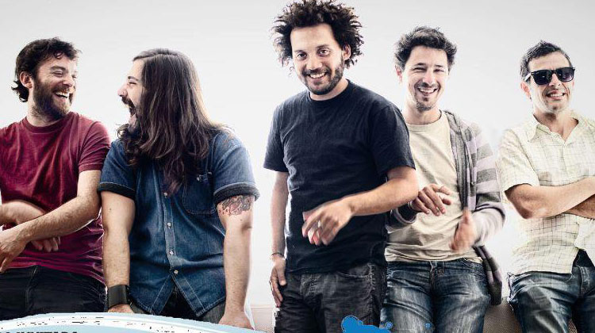
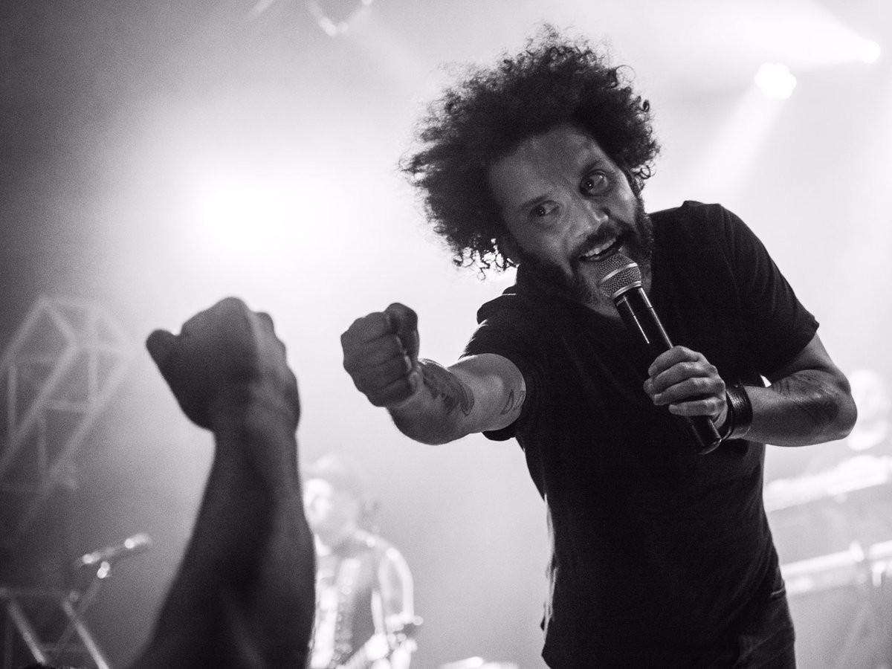
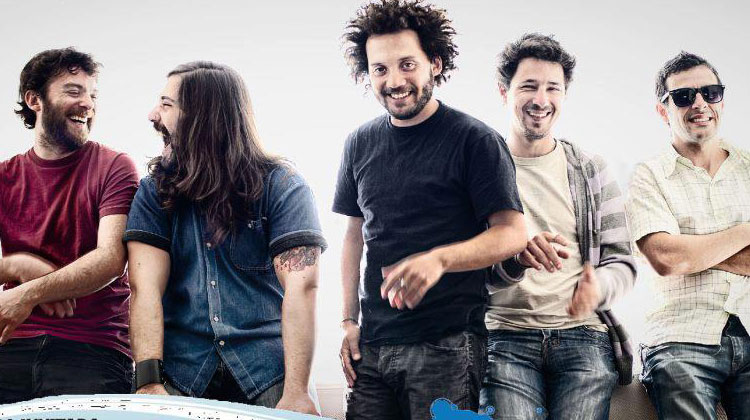
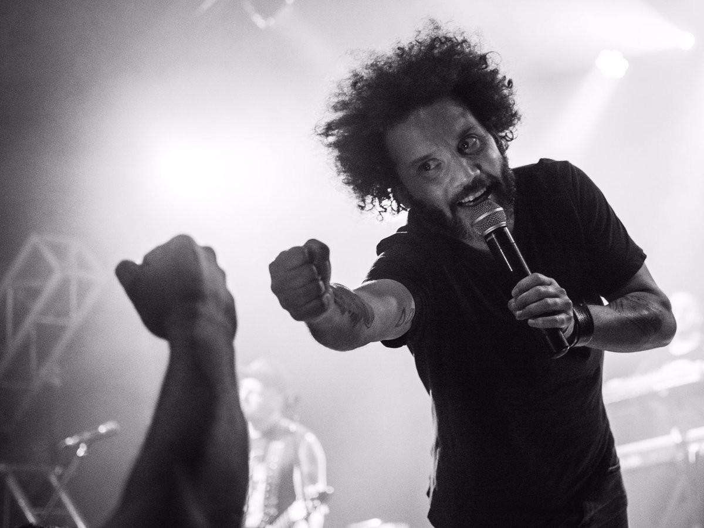
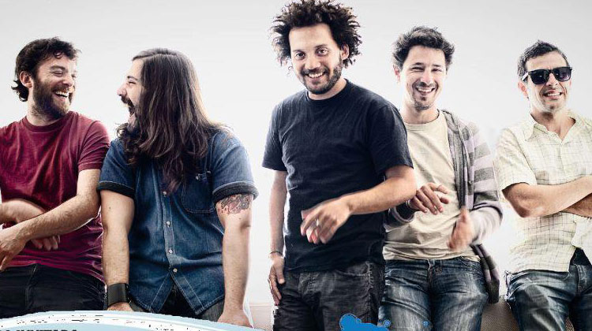
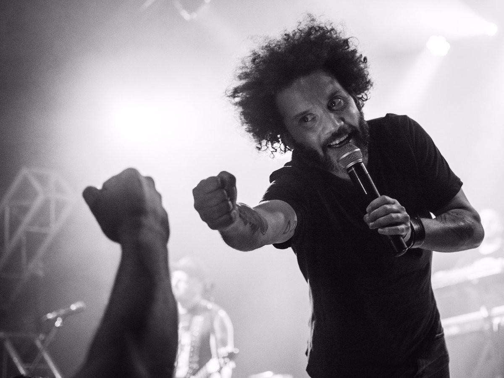
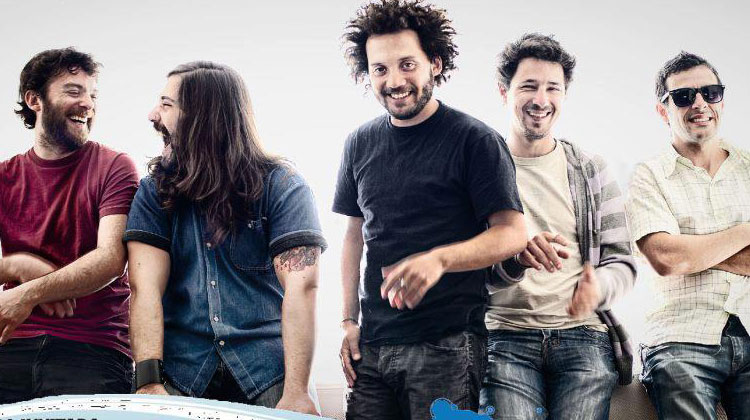
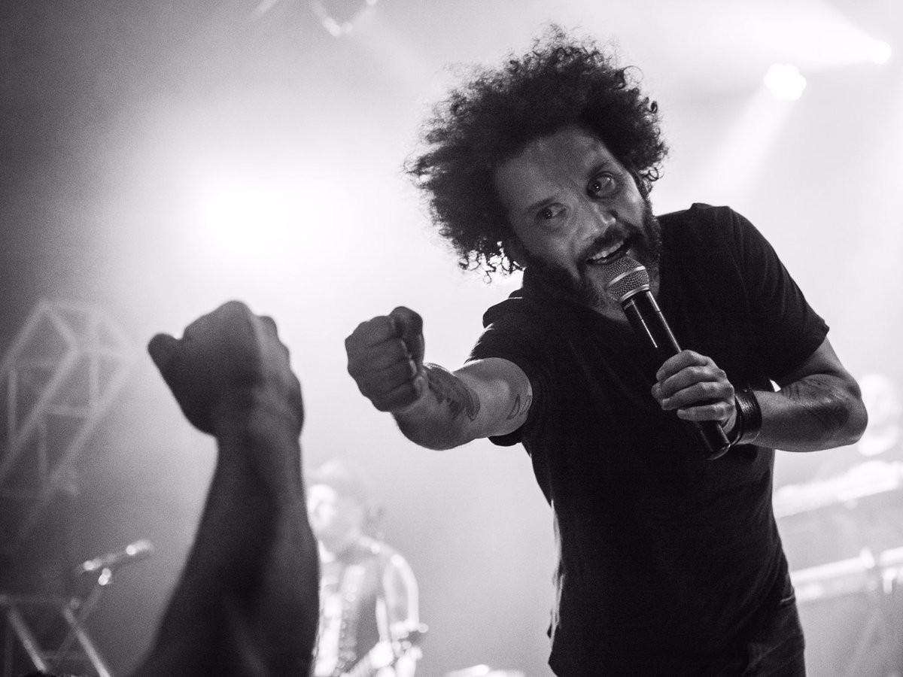

Once Tiros fue una banda de rock uruguaya formada a fines de los noventa en el barrio montevideano Punta Carretas. En sus primeros años tuvo dentro de sus integrantes a la famosa celebridad de internet de humor negro, El Bananero. El grupo transitó por varios géneros, teniendo como base fundamental el ska-punk. Hoy, con casi 20 años de banda, 6 discos editados y un montón de seguidores en Uruguay y Latinoamérica, Once Tiros pisa fuerte y sigue despachando potencia roquera en sus shows, es considerada una de las mejores bandas de rock del Uruguay tanto por su calidad sonora como por su fuerza musical en sus shows en vivo